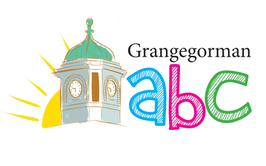

- Access and Civic Engagement Office
-
 City Campus
City Campus
-
 Students Learning With Communities
Students Learning With Communities
-
 Engagement Outreach
Engagement Outreach
-  Grangegorman ABC Programme
- Disability Service
The Access and Civic Engagement Office
The Access and Civic Engagement Office is located at the following address:
TU Dublin City Campus, Access and Civic Engagement Service
Grangegorman Lower
Dublin 7
Please ring 01 402 7604 with any questions.


Access Service
The Access Service provides a broad range of supports to ensure that students from communities and backgrounds where there is little tradition of participation in higher education succeed in accessing and graduating from higher education.
Read more about the TU Dublin - City Campus - Access Service
Students Learning with Communities
The Programme for Students Learning With Communities supports staff and students engaging in community-based learning and research (also known as service-learning), and builds links with communities.


Engagement Outreach
We support the Grangegorman community to enhance and develop TU Dublin's civic engagement, widening participation & lifelong learning work in the area.
Grangegorman Area-Based Childhood (ABC) Programme
The ABC Programme is an innovative prevention and early intervention initiative consisting of committed funding for an area-based approach to helping to improve outcomes for children by reducing child poverty.


Disability Service
Every student with a disability in TU Dublin has access to a wide range of reasonable supports and services. These are are based on each student's individual needs.


-
 31 May 2021
31 May 2021
On 28 April the Programme for Students Learning With Communities once again celebrated its annual awards event online, as a Twitter Blitz. We were delighted to be joined on twitter by so many staff, students, community partners and industry mentors to celebrate the many community engaged research and learning projects carried out this year in the curriculum.
-
22 April 2021
Join us online from 1.30pm onwards on Wednesday 28 April at https://twitter.com/SLWCTUDublin for our annual awards Twitter Blitz!
-
 31 January 2020
31 January 2020
We are delighted to invite TU Dublin academic colleagues to two upcoming workshops exploring Community Engaged Research and Learning (CERL) as a teaching method.
-
20 December 2019
We will be closing for the holidays from 20 December, re-opening on Monday 6th January.
-
 13 September 2019
13 September 2019
The Programme for Students Learning With Communities will coordinate TU Dublin's involvement, as part of a group of five European universities, in a new European funded Erasmus+ Strategic Partnership project. The CIRCLET project will encourage and support more lecturers in the five universities to reimagine their teaching to involve more students in community engaged research projects.